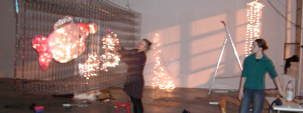
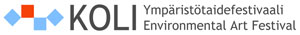
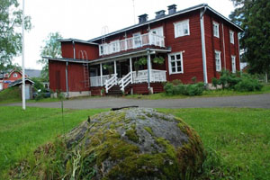

Environmental Art from Finland
EnvironmentalArt.net presents
- online exhibitions
- directory of artists
- homepages of featured artists
- news
On-line Exhibitions / Art works of the season / Nettin×â€yttelyt
/ Gallery publications 2006-11 / Galleria julkaisut 2006-011
Theme of the season 2013: Recycled Art / kierr×â€tystaide
|


|
|
Online Exhibition April 2013: Reuse of the old spring mattress
Recycled art of Riitta Schildt and Sami Saralo (Helsinki)
Riitta Schildt and Sami Sarasalo started to built up works out of recycled materials originally 2001 to the M×â€t×â€joki Environment Display (Helsinki).
Riitta Schildt´s and Sami Saralo´s Workshop (Orpaantulet) with youths: the spring mattress and lights

Riitta Schildt buildin up work out of spring mattress and lights with youths.

Riitta Schildt and Samisalo: "Orpaantulet"
News: Virtual Gallery environmentalArt.net had, last year 2012, its 10th year of celebration.
We are going to open during this year a new virtual gallery presenting finnish Recycled art. Our first Recycle artist 2013 is Susanna Autio.
|
|
Exhibitions, Festivals:

MAA JA PAIKKA / LAND IN SITU
Environmental Art Exhibition in Akaa
11. Ymp×â€ristצtaiden×â€yttely ja tapahtuma
29.6.-31.8.2013 Akaassa
Kuraattorina ymp×â€ristצtaiteilija Anna-Lea Kopperi
Nahkialanj×â€rven ymp×â€ristצ & Kulttuurikeskus Laaksola Ryצdintie 2, Toijala (Akaa)
Avoinna ti-su 11-15
 www.nakyma.fi www.nakyma.fi
SAVE VARTIOSAARI -taideprojekti II
2.6.-29.9.2013 Helsingin Vartiosaaressa.
L×â€mpim×â€sti tervetuloa avajaisiin sunnuntaina 02.06.2013 klo 13-16.
Ilmainen soutuvenekuljetus Reposalmesta klo 12 alkaen!
Lצyd×â€t lis×â€tietoja viestin alaosasta ja osoitteesta www.savevartiosaariart.weebly.com.
Olet myצs tervetullut osallistumaan projektiin!

Anu Miettinen. Polkukyltit-yhteisצtaideteos, sekatekniikka, 2012-2013. Kuvaaja Tapio Rantala.
SAVE VARTIOSAARI - Art Project II June 2 - September 29, 2013 in Helsinki Vartiosaari.
You are kindly welcome to the Opening on Sunday June 2, 2013 at 1-4 pm.
Free rowing boat transportation from Reposalmi, starting at 12.
Please find more info www.savevartiosaariart.weebly.com.
You are welcome to participate in the project, too!
Yst×â€v×â€llisin terveisin / Best Regards
Kuvataiteilija ja tuottaja / Artist and Producer
Anu Miettinen
Tel 358 (0)41 5116864 (tekstiviesti /sms)savevartiosaariart(at)gmail.com
www.savevartiosaariart.weebly.com www.facebook.com/events/248434738629931/
https://www.facebook.com/events/248434738629931/
KOLI- Environmental Art Festival 13.-19.5
Lea Turto: Stone Svamps, communal Art workshop in Koli. More photos in Facebook facebook.com/KoliYmparistotaidefestivaali


Lea Turto: Stone Svamps communal Art in prosess
KOLI- Environmental Art Festival and Community based Art Project 2013-2015


ARTISTS IN KOLI 2013
18 invited artist from Scandinavia, Japan, Iceland, and Russia
Slash and Burn - Gallery - site specific art exhibition 15.6.- 30.10.2013
Wellcome to Koli village and National Park. North Karelia, Finland.
Project Manager Anne Pehkonen
Koli- Environmental Art Festival 2013
www.koliartfestival.fi
info(at)koliartfestival.fi
The artists’ residence Ryyn×â€nen acts as a meeting place during the festival. It will provide the information about the events, participating artists and collaborators.

Ryyn×â€nen
TAITEILIJAT KOLILLA 2013
KOLI- ymp×â€ristצtaidefestivaali on kolmivuotinen ymp×â€ristצtaideprojekti Pohjois-Karjalassa. Se aloittaa toimintansa Kolin Kansallispuistossa ja Kolin kyl×â€ll׆toukokuussa 2013.
Festivaaliin on kutsuttu 18 taiteilijaa sek׆Skandinavian maista kuin myצs Ven×â€j×â€lt×â€, Islannista sek׆Japanista.
Taiteilijaresidenssi Ryyn×â€nen toimii festivaalin aikana info ja tapaamispaikkana. Projektin vet×â€j×â€n׆toimii kuvataiteilija Anne Pehkonen.
Kaskikalleria - ymp×â€ristצtaiden×â€yttely 15.6.- 30.10.2013
Tervetuloa Kolin kyl×â€Ã—â€n ja kansallispuistoon Pohjois-Karjalaan.
WHAT IS ENVIRONMENTAL ART?
We recommend articles of GreenMuseum.org "A Profusion of Terms" by Sam Bower
|
|
EnvironmentalArt.net Homepages
Featured Artists / Taiteilijat
Usefull seach for this site
Etsitkצ tietoja taiteilijoista tai teoksista.
K×â€yt׆hakukonetta (this Site) ! Sivuston kautta lצyd×â€t n. 60 taiteilijaa.
ylצs
info / EnvironmentalArt.net
- ymp×â€ristצtaiteilijoiden oma internet-palvelu.
Verkkogalleria julkaisee artikkeleita, uutisia, ymp×â€ristצtaiteilijoiden ilmoituksia, kotisivuja ja esittelyit׆sek׆teoskuvia taiteilijoiden nimiss׆ja lukuun. Sivupaikan ottajien oma nettiosoite on muotoa www.environmentalart.net/haluamasinimi. Kaivatessasi kotisivua ota yhteytt×â€: webmaster Lea Turto
|